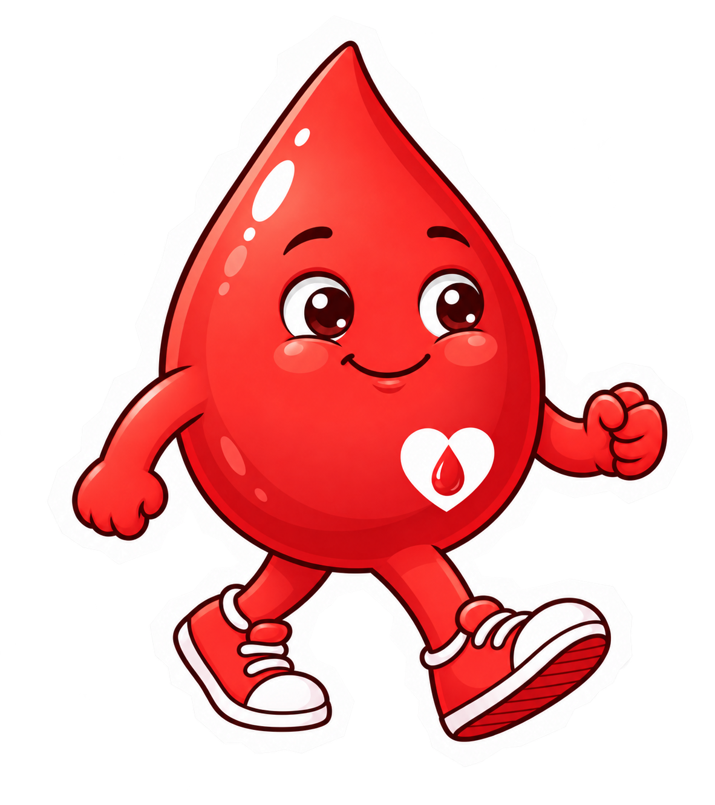
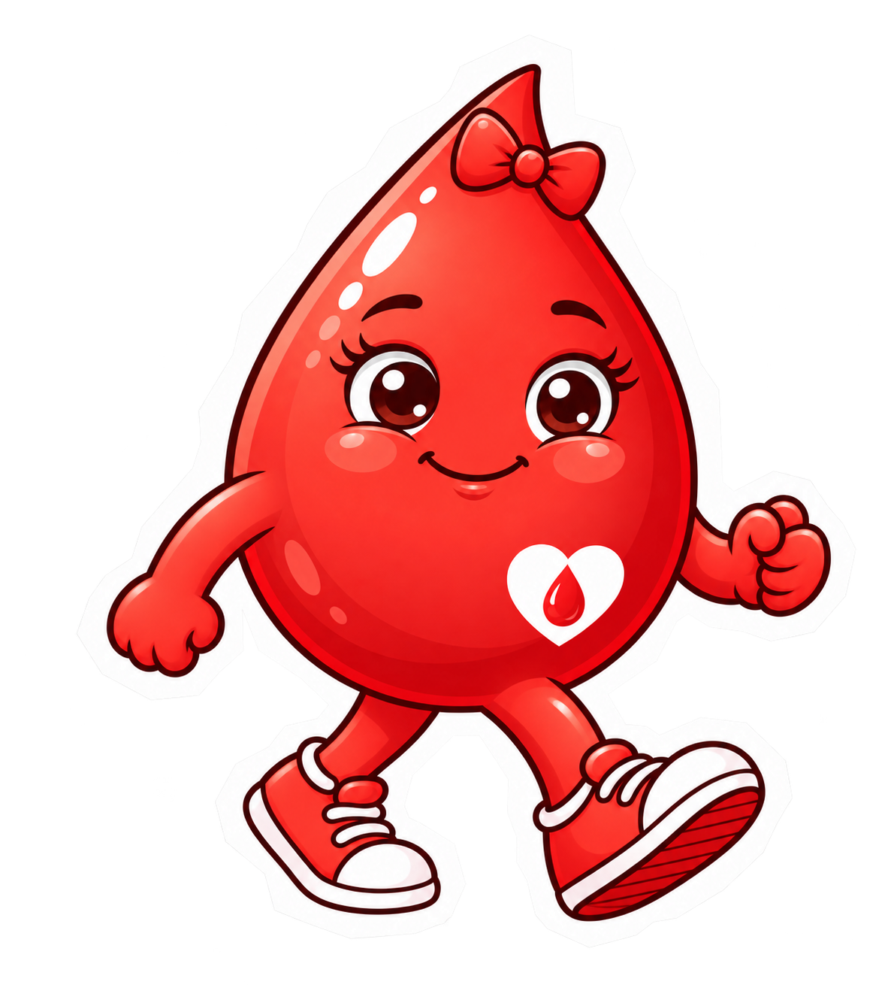
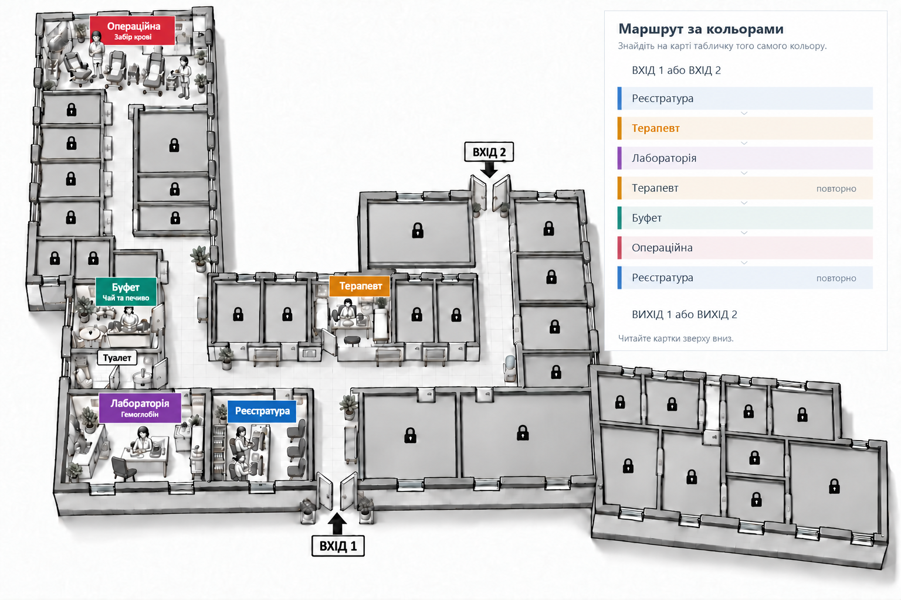

ІГРОВИЙ МІНІГІДАРКУШ 05 · РЕЄСТРАТУРА
МИ НА МІСЦІ. ПОЧНІМО ЗІ ЗНАЙОМСТВА.Від документів —
Від документів —
до своєї картки.
Краплик і Краплинка — обидва донори. Допоможи кожному пройти реєстрацію та отримати власну картку для терапевта.
МАЛЕНЬКІ КРОКИ ВЕЛИКОЇ ТУРБОТИ
- Передати документи
- Повідомити адресу та телефон
- Перевірити й отримати картку
СПОЧАТКУ — ДО РЕЄСТРАТУРИ
Зайдемо разом і знайдемо своє місце

Краплик
КраплинкаВхід 1 → коридор → реєстратура. Натисни кнопку, щоб герої вирушили.
КрапликЧервоний Краплик РезусовичКраплинкаЧервона Краплинка Плазмівна
КРОК 1 · ДОКУМЕНТИКартка 1 із 2
Добрий день! Ми вперше.
АРКУШ ПРОЙДЕНО
Обидві картки отримано. Далі — терапевт!
Краплинка: «Моя картка зі мною!»
Краплик: «І моя теж. Ходімо до терапевта кожен зі своєю карткою».
Реєстрацію завершено. Медичні питання обговоримо з терапевтом на наступному аркуші.
Де реєстратура й кабінет терапевта?
